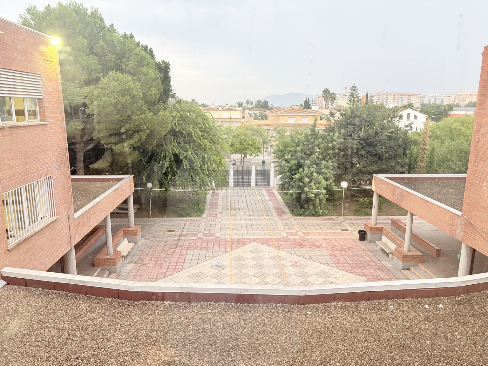

Un viatge. Quatre destinacions. Un món per descobrir.
🎒 El teu repte: recull estrelles i porta noves idees a casa.

Missió Erasmus+: prepara la motxilla amb curiositat, respecte i ganes d’aprendre.
Recull estrelles, esquiva maletes i completa els reptes de cada destinació. Inspirat en el projecte Erasmus+ del centre. Veure storyboard 3D ↗
Les imatges d’Estocolm, França, Bèlgica i Zlín han estat aportades per l’usuari i mostren les experiències del projecte Erasmus+ del centre. La fotografia de l’IES Gregori Maians d’Oliva ha estat aportada per l’usuari. El logotip prové de Wikimedia Commons.